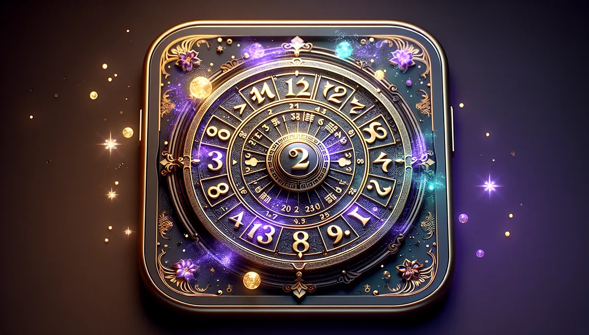

60甲子各配一種五行物質，是中國最早的「元素週期表」。您是海中金還是大林木？
📜 源頭脈絡
鐵板神數被認為是中國命理術數裡最高境界的系統。它不像八字給您一個「命格」，而是直接打出一條一條的讖語條文，告訴您父親屬什麼生肖、幾歲結婚、哪一年轉行。像鐵板釘釘，所以叫鐵板。
不是邵雍發明的
幾乎所有鐵板神數的文獻都說它是宋代邵雍（邵康節）發明的。但維基百科和學術考證都指出：這個說法沒有確實證據。從邵雍之後到清朝，數百年間的文獻裡，沒有任何一處提到鐵板神數。它借用了邵雍《皇極經世》的易學概念來做運算，但不是邵雍本人創造的，只是託名。
鐵板神數的興起和流行是在清代乾隆、嘉慶年間（距今約二百多年）。關鍵人物是一位叫「鐵卜子」（又稱鐵道人）的道長，他對條文進行了大規模的整理和校訂，加入了清代的曆法和官場稱謂用語，形成了我們今天看到的版本。「鐵板」這兩個字，一說是「鐵一般準確的版本」，另一說是「鐵卜子的版本」的簡稱。
條文與《皇極分經數》
學者考證發現，鐵板神數的條文和明代宮廷御用的《皇極分經數》高度相似。現在坊間流通的條文，大部分從清代道光年間刻印的《神機妙算鐵版數》抄錄出來，而那部書本身就是根據《皇極分經數》修改演變的。清代《續修四庫全書》目錄裡收錄了道光刻印本十三卷《神機妙算鐵版數》和舊鈔本《鐵版數不分卷》，但在所有四庫書目中，找不到《皇極分經數》的記錄，說明它在清代已經被鐵板神數取代了。
現存最早的完整版本是虛白廬收藏的清中葉刻本，十四卷。坊間流傳的大多是據民國重排鉛印本翻印的，錯誤極多。
考時定刻
鐵板神數最核心的技術叫「考時定刻」。一般八字只要求精確到時辰（兩小時），鐵板要求精確到「刻」（15分鐘）。一個時辰有八刻，不同的刻會推算出不同的條文編號。
操作方式：業者先打出一些條文（通常是六親生肖），問客人「您母親屬虎對嗎？」「您有兩個兄弟對嗎？」如果不對，就微調出生時間再算，直到打出的條文和客人的真實情況吻合。這個過程本身就是在校準時間。
批評者認為「考時定刻」其實是一種精巧的冷讀術（Cold Reading）：在反覆核對的過程中，業者已經從客人的反應裡獲得了大量資訊。這也是為什麼鐵板神數常常被說「六親很準，其他就不一定」。
南派與北派
鐵板神數有南派和北派之分。南派重用日干支和時干支推算，隨前輩從大陸傳至香港，至今仍有傳承。北派重用月柱和時辰干支，但近代已幾乎失傳。正宗版本應有二十卷，現在多數流派只用十二卷或八卷，部分卷有缺失。
六十甲子納音
鐵板神數大量使用「納音」系統。六十甲子（天干地支的60種組合）每兩組配一個「納音」，一共30種。比如甲子年和乙丑年的納音是「海中金」，丙寅年和丁卯年是「爐中火」。納音把時間和物質元素建立了一對一的映射關係，可以理解為中國版的「元素分類表」。
鐵板神數追求15分鐘精度的時間劃分，和現代時間生物學（Chronobiology）的發現有對應。人體的「超晝節律」（Ultradian Rhythm）以90-120分鐘為一個週期循環，而一個時辰（120分鐘）分成八刻（每刻15分鐘）正好落在這個範圍內。這不代表鐵板的時間劃分是科學的，但它顯示古人對「時間不是均質的」這件事有直覺性的認識。
「考時定刻」的質疑，在心理學上對應的概念是「巴納姆效應」和「確認偏誤」：人傾向於認為模糊的描述精確地描述了自己。但鐵板神數的條文不模糊（「母親屬虎」不是巴納姆式的描述），所以它的準確與否，取決於推算邏輯本身而不是心理暗示。這一點讓它和一般的命理系統有本質區別。
納音是四柱八字的材質層。年柱的納音是家族底色，像一棟房子的建材。月柱是事業的調性。日柱是和自己對話的方式。時柱是老年的旋律。
海中金：沉在水底的金屬。乳香的沉穩厚重，像在深海裡安靜發光的東西。
爐中火：被爐壁圍住的火焰。薰衣草的涼意不是滅火，是讓火焰在可控的溫度裡持續燃燒。
大林木：整片森林的木。雪松的高大沉靜，不是一棵樹，是一整片。
✦ 鐵板敲一下就知道真假。您的納音敲一下，就知道是什麼材質。精油讓那個材質的聲音更清楚。